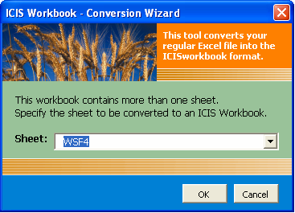

TDM ICIS Workbook 5.4
From ICISWiki
Contents
|
INTRODUCTION
ICIS Workbook is the data entry application for the Data Management System of ICIS. It provides more than 40 different functionalities via a dedicated menu and toolbar that bind with the MS Excel application. An Excel spreadsheet serves as the medium for data entry. This was specifically chosen with the users’ adaptability in mind, since Excel has been widely used in offices, laboratories and field studies to store tabulated data.
However, a spreadsheet this time only serves as an interface instead of the usual storage place. ICIS Workbook reads the content of the spreadsheet and uploads it to a local database designed to contain genetic, phenotypic, and environmental data. It also reads from a set of central databases to establish links between local and published data. This is done in a non-database-backend-specific manner by calling functions from an “ICIS32.dll” file that uses ODBC technology to connect with various database formats. An initialization file (*.ini) is also used to store variable=value keys for customizing the behavior of the application.
Currently, the functionalities are written in VBA macros packaged as an Excel Add-in application named “ICISworkbook.xla”. However, in the course of its evolution, the trend is to completely separate the functions from the interface. Thus, Excel will later become just one of the many interfaces for the ICIS Workbook along with other popular spreadsheet applications, a web interface, as well as an interface for handheld devices.
Fig. 1. ICISworkbook.xla making use of an *.ini file and calling functions from ICIS32.dll
Definition of Terms
The Workbook uses a number of terms to represent the concepts which serve as framework for the design of the application. These terms are defined as follows:
Study
A study is the basic, reportable unit of research. It is synonymous with the notions of experiment, nursery or survey. A STUDY must be uniquely identified by a name which can be a combination of alphanumeric characters, space, underscore, and dash not exceeding a database field limit of 50 characters or a shorter soft limit which can be set in the *.ini file. A study TITLE, however, is used to provide a more descriptive name of up to 255 characters. An ICIS-intrinsic PMKEY or project management key is also definable but is currently not being used. An OBJECTIVE for the study can be defined for up to a limit of 255 characters. The START DATE and END DATE of the study can also be set as a numeric entry of the form yyyymmdd. And finally, the STUDY TYPE classifies the study to be either an experiment (E), nursery (N), survey (S), and so on.
Fig. 2. Study description
Factor and Level
A classifying variable whose value is already known before the study is conducted is called a FACTOR. A common example would be an entry no. which identifies each individual entry on a given list. The discrete values given to a factor variable are called Levels. Thus, in the illustration below, the nos. 1, 2, 3, and so on… are the levels of the factor “ENTRYNO”. These levels can be either numeric (N) or character (C) DATA TYPE, and may be composed of the printable ASCII characters. Factor variables are identified by their name which can also be made up of alphanumeric characters, space, underscore, and dash not exceeding a database field limit of 50 characters. However, same as the Study Title, a DESCRIPTION field with a limit of 255 characters is allotted to contain a clearer definition of a most likely abbreviated factor name.
Fig. 3. Factor variables
Fig. 4. Factor levels
Condition
A factor that has a single level throughout the study is called a CONDITION. A common example is “YEAR” if the study was conducted within a year, or “LOCATION” if the study took place in a single location.
Fig. 5. Condition variables
Label
A factor whose levels present additional information regarding the corresponding levels of another factor is called a LABEL of that factor. The “GID” and “DESIGNATION”, for example, give other information about entry no. 1, having a germplasm identifier 1356801, and a cultivar name CN 1229-9-3-2-5. Thus, “GID” and “DESIGNATION” are labels of “ENTRYNO”.
To distinguish between whose a label of whom, the encoder must choose which factor is best suited to be the primary factor that can uniquely identify each individual entries. Once a certain factor was chosen, the next step would be to have that factor’s name appear under the LABEL column on the same row as the factor variable. Thus, a primary factor would have the same value for the variable name and label columns. Furthermore, to denote the other factors as labels of the primary factor, they must have the name of the primary factor appear under the LABEL column on their corresponding rows.
For the conditions, there is a special label called “STUDY” which is placed under the LABEL column of the condition rows. This signifies the variables in the condition section to be conditions of the study. This assumption conveys that not all variables in the condition section apply to the whole study. If the condition variables have under the LABEL column their own name or the name of other condition variables, they are actually just factors having initially a single level for the time the current study is defined. But they may take a different value in another declaration of the study using the same study name.
Fig. 6. Labels
Variate and Data
A variable that is being measured or observed in the study is called a VARIATE. The value of this variate variable is termed as Datum or Data. Variate names, like factors, can be composed of alphanumeric characters, space, underscore, and dash not exceeding a database field limit of 50 characters. A DESCRIPTION field with a limit of 255 characters is also allotted to contain a clearer definition of a most likely abbreviated variate name. And variates may contain data of numeric (N) or character (C) DATA TYPE as well.
Fig. 7. Variate variables
Fig. 8. Variate data
Constant
A variable that is measured only once in the study is called a CONSTANT. Typical examples are the characteristics of the soil used in a particular study that is conducted in one location.
Fig. 9. Constant variables
Property, Scale, and Method
PROPERTY is a measurable characteristic of an experimental unit or experimental material that is manipulated or measured in a study. SCALE is a unit of measurement used in expressing a property. METHOD is the manner a property is measured, observed or applied. Collectively these are called ontology. Ontology are controlled vocabularies. This enables different studies using different variable names but pertaining to similar concepts to be compared and summarized. Thus, the investigators have the freedom to choose their variable naming conventions but can still communicate the same concepts by defining their variables through a common ontology.
Observation Unit
An observation unit is a combination of the levels of one or more factors that as a whole defines the datum that was measured. It is equivalent to a row in a spreadsheet excluding the variate data which resulted from the measurements.
Fig. 10. Observation unit
ICIS Workbook Structure
Since MS Excel provides so much flexibility to be done on a worksheet, it is possible but time-consuming for the ICIS Workbook to know where exactly a particular piece of information can be read from the worksheet. Thus, in order to have a standard place to look for different kinds of data, ICIS Workbook uses a formatted input file composed primarily of two sheets: the Description and Observation sheets. The Description sheet is for entering information about the study and for describing the different variables used in the study while the Observation sheet is for entering the data gathered from the study.
Description Sheet
Fig. 11. Description sheet
The Description sheet is divided into five sections: STUDY, CONDITION, FACTOR, CONSTANT, and VARIATE. Each of this section has a corresponding named range of cells which are defined automatically along with the creation of the input file.
The named ranges are listed on the Name Box which can be seen on the upper left corner of MS Excel. By clicking on a cell, the cell’s address is displayed on the box except when that cell or group of cells has a defined name. By selecting a name from the list, the corresponding cell or group of cells get selected on the worksheet.
Fig. 12. Named ranges
The STUDY section has seven rows with two columns each. The first column contains the row labels while the second column is for entering the corresponding row values. The seven rows are labeled as STUDY, TITLE, PMKEY, OBJECTIVE, START DATE, END DATE and STUDY TYPE. The STUDY row contains the name of the study that uniquely identifies each study in the database. If you intend to load a new study, the name must not exist yet. Otherwise, the content of your new study will be merged to an existing study in the database that has the same name.
The CONDITION, FACTOR, CONSTANT, and VARIATE sections use a fixed set of columns while their rows vary according to the number of variables used. The Condition section makes use of eight columns. The Factor and Constant sections use only seven. The Variate section uses only six except when a parallel factor is defined in the study.
In all four sections, the label of the first column is the name of the section. Variable names to be used in the study are entered in this first column. The second column, labeled DESCRIPTION, is where you can completely describe the variable name used. The third, fourth, and fifth columns are for the PROPERTY, SCALE, and METHOD or what we have previously defined as the ontology of the variable. The sixth column is for the DATA TYPE. The seventh column, called VALUE, is only found under the Condition and Constant sections while the eighth column, called LABEL, exists only in the Condition and Factor sections.
Observation Sheet
Fig. 13. Observation sheet
The Observation sheet is initially blank upon creation of the input file. But by using the Setup ► Sheet ► Observation menu, the factors and variates defined in the Description sheet are automatically assigned as column headings in the Observation sheet. Note that only the factors and variates are carried over from the Description sheet to the Observation sheet. This is because conditions and constants have fixed values throughout the study and a VALUE column is already provided for these in the Description sheet. Note further that the order of the factor and variate rows in the Description sheet is the same as the order of the columns in the Observation sheet. This is required by the application to eliminate the need to always check if the right data is on the right place.
There is a special column called the ROWTAG column in the Observation sheet. This is found one blank column away from the last variate column. Any mark under this column would render the corresponding row as a comment and will be ignored during the loading of the observations to the database. A named range is automatically created and used by the system to refer to this column.

Fig. 14. ROWTAG column
Multiple Representations
Within a study, observations may fall under several groups of information. For example, a study may contain evaluation data, climate data, pest incidence, and so on. Such groups are called representations or datasets. If a study contains multiple representations, these can be represented as columns after the LABEL column. To define a representation, the factors and variates belonging to it must be marked with an asterisk (*) or any character on their respective rows under the column which pertains to that representation. A name can be given for the representation by typing it under the corresponding column along the row adjacent to the header row of the FACTOR section.

Fig. 15. Multiple representations
Parallel Dataset
The Workbook also accommodates a dataset arranged in a parallel manner. A parallel factor is one whose levels are associated with individual variate columns in the Observation sheet. The factor variable is specified in the FACTOR section in the usual manner but the variable name should also appear beside the DATA TYPE column in the header row of the VARIATE section. Under this variable name, the corresponding factor levels appear adjacent to their associated variate rows. In the Observation sheet, this parallel factor no longer has its own column since the levels are already declared in the Description sheet.
Fig. 16. Parallel dataset
BEHIND THE SCENE
Before going deeper into the discussion of the application itself, let us first take a glimpse of the mechanisms behind the installation of the ICIS Workbook. Understanding this will provide the user some ideas on where to investigate in case an application error occurred.
Installation Directory
As with all installations, you were asked to specify the drive and directory on where to put the application. Assuming you specified “C:\ICIS5\”, three subdirectories will be created here: Database, Document, and Exes.

Fig. 17. ICIS installation directory
Database Directory
Inside the “Database” directory, a subdirectory will be created containing the name of the crop implementation. For rice, the crop implementation is called “IRIS” or International Rice Information System. If you installed a second crop implementation, let’s say for wheat, another subdirectory will be created in the same level with IRIS and will have the name “IWIS” for International Wheat Information System, and so on. Inside this crop-specific directory, two lower level subdirectories will also be created: “Central” and “Local”. And inside these two is where the actual databases are found.
Document Directory
In the “Document” directory is where you can find the “TDM” or the Technical Documentation Manual. The TDM is itself divided into subdirectories to facilitate the groupings of the actual MS Word files which constitute the Manual.
Exes Directory
The “Exes” directory is where the actual application or executable files are located. If you are to update any of the applications to its latest version, you will only need to overwrite the corresponding file here.
Central and Local Databases
ICIS Workbook operates on three central databases and one local. A central database is meant to be a public goods or everybody can see its content. Researchers who wish to share the results of their studies can ask for their data to be included in the central database. ICIS central databases are managed by CRIL. These are regularly updated and made available for public download via the FTP site ► ftp:\\ftp.cgiar.org\icis. These are also distributed in DVDs as well. A local database is where you keep your private data. Only the user has the copy of this database and thus a place to keep company trade secrets or researches still in progress. The central databases are read-only in the course of any ICIS application’s session while the local database is where uploaded data get saved.
Fig. 18. Central and local databases
Central GMS Database
Connection to the databases is first settled in the central GMS (Genealogy Management System). This contains the INSTLN and USERS tables that are necessary to make the database connection. The entry in the INSTLN table of the local database must coincide with one of the entries in the INSTLN table of the central GMS database. If ICIS was installed in the computer through the installation CD, the proper entries in the two INSTLN tables have been setup automatically. The USERS table, on the other hand, determines access rights to the database.
Central DMS Database
The central DMS (Data Management System) is the main database of ICIS Workbook. Public studies are retrieved from this database for reference purposes. This database contains the TRAIT, SCALE, and TMETHOD tables that house the standard but growing list of ontologies that were formed and are continuously being developed through the contributions of different institutions who wish to share their data to the public.
Central GEMS Database
Of all the ICIS databases, the central GEMS (Genomics Management System) is the newest member of the family since its associated application is the latest addition to the ICIS software package. But unlike the other central databases, the central GEMS is not read-only. Marker and allele names and their generated IDs are added here through the GEMS functionalities in the ICIS Workbook.
Local ICIS Database
The local database contains the table structures of both GMS and DMS. As previously pointed out, this is where all uploaded data are saved. A copy of this database must be sent to CRIL if the owner wants his data to be included in the central. Although only one local database is accessed by the ICIS applications, there can be different versions of the local database depending on how the user or the institution classifies their data. For example, IRRI is subdivided into organizational units and each OU has its own local ICIS database. However, each OU may be working on different projects. Thus, a local database may be defined for each project.
ODBC Data Source Names
One major feature of ICIS is that it tries to accommodate whatever database backend the user wants to use, may it be proprietary or open source database formats. To accomplish this principle, ICIS makes use of the ODBC (Open Database Connectivity) technology in Windows. Thus, during proper installation, Data Source Names are being created which contain references to the actual central and local databases. These DSNs can be seen by clicking on the Start Menu ► Control Panel ► Administrative Tools ► Data Sources (ODBC), and the ODBC Data Source Administrator dialog interface will appear:
Fig. 19. ODBC Data Source Administrator dialog interface
The names that appear in this dialog interface are the ones the user specified during the step-by-step installation procedure. As it can be seen from the figure above, each of the three central databases has a corresponding entry. For the local, two local databases were specified: Training and SHU. Each of these local databases has two DSNs associated with it, one for the DMS and one for the GMS. Although these are two separate DSNs, they are actually referring to only one database since, as previously stated, the local database contains the table structures of both DMS and GMS.
Required Files
The operation of ICIS Workbook involves three major files: ICISworkbook.xla, ICIS32.dll, and the *.ini file. ICISworkbook.xla is the Excel Add-in application itself. It performs database interaction by calling functions from ICIS32.dll. This dynamic link library (DLL) file which uses the ODBC technology is the one that deals with database format-specific commands to present standard function calls to the different ICIS applications thereby enabling ICIS to run on various database formats.
The initialization (*.ini) file provides customized control on each of the ICIS applications. Looking inside the *.ini file, you’ll see different sections allotted to each ICIS application. It contains variable=value entries which are read by the ICIS applications and perform the corresponding flow of action. To the very least, one *.ini file corresponds to one local database. Thus, in this documentation, the asterisk (*) character was used as a prefix to substitute for the specific name of the file, which commonly is the same as the name of the local database. But because an *.ini file provides customization, it’s also possible to create different *.ini files for each personalized settings.
Other than the three major files, ICIS Workbook also uses five MS Word files that serve as templates for the SMTA functions. These are the “SMTAFromIRRITemplate.doc”, “SMTAFromIRRITemplate_short.doc”, “SMTA section 10 click-wrap.doc”, “SMTA section 10 shrink-wrap.doc”, and the “SMTA section 10 signed.doc”. Details of the SMTA functions will be discussed later.
Fig. 20. Required files for ICIS Workbook
Inside the *.ini File
The upper portion of the *.ini file defines the database connections. Each of the central and local databases has a dedicated INI section where three INI keys are defined: the data source name (DSN), the user identification (UID), and the password (PWD). The *.ini file is automatically created by the ICIS installer together with the creation of the DSN entries that were discussed above. So after proper installation, you don’t really need to modify anything in your *.ini file. But in case you wanted to connect to a different database, be sure to specify the exact DSN, character by character, as listed in your ODBC Data Source Administrator dialog interface.
Fig. 21. Data source names in the Training.ini file
Another INI section shared by both the ICIS Workbook and the ICIS Program Launcher applications is the [ICIS] section. This section contains the Logo key which defines the full path of an image file used by both applications to display a picture of a crop. This allows easy identification of which crop the ICIS applications are currently working on. Of course, it’s the user’s responsibility to specify the right picture corresponding to the crop database in use. Valid image file formats are *.jpg, *.gif, and *.bmp. The dimensions of the image file to exactly fit the allotted space must be 192 x 72 pixels.
Finally, the [WORKBOOK] section contains all the INI keys for the ICIS Workbook. The Workbook key is necessary to identify the location of the ICIS32.dll file. The LastDir key is useful for specifying the default working directory where file templates can be stored for easy access. The HelpFile key, as the name implies, points to the help file. The rest of the keys will be discussed in their own respective topics.
Fig. 22. Logo key in the Training.ini file used by both ICIS Program Launcher and ICIS Workbook

Fig. 23. [WORKBOOK] section in the Training.ini file
RUNNING THE APPLICATION
The ICIS Workbook, as first mentioned in the introduction, is a collection of VBA macros packaged as an Excel Add-in application, thus the extension “.xla” in contrast to the usual Excel Spreadsheet with the extension “.xls”. One difference between the two is that macros in an “.xls” have a default spreadsheet that will always appear when the application is run. Close that spreadsheet and the macros are also gone. With an “.xla”, the macros become part of Excel and would, by default, operate on any active spreadsheet. The macros will stay even if all spreadsheets were closed, and they will only be unloaded if Excel itself was terminated.
Setting MS Excel Security Level
Whether an “.xls” or an “.xla”, being a macro, the ICIS Workbook has to pass through Excel’s security feature which has four levels: Very High, High, Medium, and Low. The security levels can be accessed through Excel’s Tools ► Macro ► Security menu:
Fig. 24. MS Excel Security Levels
Depending on the current security level set, running a macro will prompt the following message:
Very High: (Fig. 25)
High: (Fig. 26)
Medium: (Fig. 27)
Low:
This security setting will no longer show any message. Any macro run will just load seamlessly, even viruses, so try to avoid this setting.
In order to run the ICIS Workbook, the security level must be set to Medium.
Starting from the ICIS Launcher
After installing ICIS in your computer, a shortcut for the ICIS Launcher can be found in your desktop. This tool makes all the ICIS applications easily accessible by double-clicking on the corresponding list item, or selecting it and pressing the Run button.
However, on first use of the ICIS Launcher, you will be asked to specify the *.ini file. This same dialog interface will appear when you want to change *.ini file by clicking on the “Connect to an ICIS Database” button.
Fig. 28. Specifying the *.ini file to use
Fig. 29. Running ICIS Workbook from the ICIS Program Launcher
About ICISworkbook
After you’ve set the MS Excel security level to Medium and you have double-clicked the WORKBOOK entry from the ICIS Launcher, the Security Warning dialog interface will be shown.
Fig. 30. Security Warning dialog interface
You must click the “Enable Macros” button for ICIS Workbook to run. After this, the About ICISworkbook dialog interface will be shown as the welcome screen.
Fig. 31. About ICISworkbook dialog interface
There are important things to note in this dialog interface. First is the version no. of the application, you must supply this information in case you need technical support. Second, the yellow underlined words are clickable links to resource sites.
ICIS WORKBOOK MENUS
Once ICIS Workbook has been launched, a menu item labeled ICISworkbook will be added to the main menu of Excel. This is useful for identifying if ICIS Workbook is currently running. It contains two submenus, namely, Show Menu and About. “Show Menu” displays the ICIS Workbook menu and toolbar, while “About” displays the About ICISworkbook dialog interface.
Fig. 32. ICISworkbook Excel menu
The ICIS Workbook menu and toolbar address the needs of both novice and experienced ICIS Workbook users.
Menu for Novice Users
The ICIS Workbook menu provides hierarchical groupings of menu items for novice users to have an idea on where to find a specific function. It consists of five groupings: Study, Setup, Utilities, Add-ins, and Help.
Fig. 33. ICISworkbook menu
Toolbar for Advanced Users
The ICIS Workbook toolbar provides quick access to experienced users when they are already familiar with the toolbar icons and their associated functions. But letting the mouse pointer stay on top of an icon for a few seconds will also reveal the name of the function.
Fig. 34. ICISworkbook toolbar
Aside from classifying novice and advanced users based on the length of time they’ve used ICIS Workbook, users can further be categorized as administrators and encoders.
ADMINISTRATOR FUNCTIONS
Administrators are those who are completely knowledgeable on setting up studies (experiment, nursery, survey, etc.). Most likely they are the scientists conducting the research. Administrators must know about the factors and variates used in the study, particularly their name variants since these would be necessary to define the ontology or the property, scale, and method.
There is an INI key called EncoderView which limits the availability of functions in the ICIS Workbook toolbar. By setting EncoderView=True, all icons offering administrator functions will be hidden from the toolbar. This is useful for limiting access to encoders to prevent accidental changes to the study structure in the Description sheet. Note, however, that the effect of this INI key is only during startup of the ICIS Workbook. Further note that not having this key in the INI file has the same effect as setting it to False, which shows all available functions in the toolbar.
Fig. 35. INI key EncoderView=True
Encoders are those who are tasked to input collected data for the study. Most likely they are the laboratory technicians assisting the scientists. They need not know the full details of the factors and variates used. Their focus is only on the few yellow-colored cells of the Description sheet and mostly on the Observation sheet where they need to type the data. Thus, the Description sheet, which defines the study structure, must be protected from unintended modifications. With the encoder view turned on, some columns and rows in the Description sheet are also hidden, showing only the yellow cells and the information that pertains to them.
Fig. 36. Encoder View hides some columns and rows in the Description sheet
Pay close attention to the toolbar icon with a pair of eyeglasses. This is the Workbook View function. It toggles between Encoder View and Administrator View. When the encoder view is in effect, the icon displays the administrator view or the pair of eyeglasses with a worksheet at the back. This means that by clicking on the icon, you will switch to the administrator view.
The administrator view shows all the columns and rows in the Description sheet as well as all the icons in the ICIS Workbook toolbar. The columns that were hidden during the encoder view are the property, scale, method, data type, and label columns. The rows, on the other hand, are those that define the factor and variate variables.
During administrator view, the Workbook View icon shows a pair of eyeglasses without the worksheet which stands for the encoder view that is to take effect if the user clicks it.
Fig. 37. Administrator View shows all columns and rows in the Description sheet
Setting up a Study from a Blank Workbook
As an administrator using ICIS Workbook for the first time, your first task is to create the study structure. There are different ways to do this; one would be to start from a skeletal pre-formatted workbook by clicking on the Study → New Study menu or the associated toolbar icon.
Fig. 38. Study → New Study menu and toolbar

Fig. 39. Blank workbook
Starting from the Description Sheet
Once you have a blank workbook, you have the option to work on the Description sheet first. To do this, you’ll have to create a row entry for each condition, factor, constant, and variate variables that are needed for the study. Do this by clicking on the Setup → Add Variable → <variable type> menu.
Fig. 40. Setup → Add Variable menu and toolbar
Using the toolbar is a quicker way to go since you just set each variable type once and click as many as needed on the Add icon. Then you may start typing on the allotted cells.
Fig. 41. Create row entries in the Description sheet
Setting up the Observation Sheet from the Description Sheet
Once you have typed the factors and variates in the Description sheet, these variables must reflect as the column names in the Observation sheet. The quickest way to do this is to click on the Setup → Observation Sheet menu or the equivalent toolbar function.

Fig. 42. Setup → Observation Sheet menu and toolbar
Fig. 43. Resulting Observation sheet from the Setup → Observation Sheet function
Starting from the Observation Sheet
The alternative option when you have a blank workbook is to create the Observation sheet first then define the Description sheet later. To do this, you must first go to the Observation sheet by clicking on the tab at the bottom of your screen.
Fig. 44. Click the corresponding tab to switch between the Description and Observation sheets
Then on the Observation sheet, start typing all the factors first to be followed by all the variates to serve as column names. Note that conditions and constants have their own Value column in the Description sheet so they are no longer included in the Observation sheet. Be sure that the factor and variate columns form a contiguous block without any blank column dividing the two sections and that the names occupy the first row of the sheet. Then, allot one blank column after the last variate and type “ROWTAG” on the next column. Finally, select the ROWTAG cell and replace the cell address displayed in the Name Box by typing in “ROWTAG” and pressing the Enter key.
Fig. 45. Create the column names in the Observation sheet
Setting up the Description Sheet from the Observation Sheet
When the factors and variates have already been entered as column names in the Observation sheet and the ROWTAG column and range name has been defined, generating the Description sheet is as easy as clicking on the Setup → Description Sheet menu or the equivalent toolbar function.

Fig. 46. Setup → Description Sheet menu and toolbar
Then a dialog interface will appear asking you to select the first variate column from a dropdown list. The default value actually depends on the currently selected cell on the Observation sheet. If you first select the first variate name in the Observation sheet before clicking the Setup → Description Sheet menu, then it will be the currently selected list item and all you need to do is to click the OK button to generate the Description sheet.
Fig. 47. Setup Description dialog interface
You’ll notice that there is also a dropdown list for the Observation sheet. This is actually for supporting multiple Description-Observation sheet pair which will be discussed later.
After clicking the OK button, the Description sheet will be activated and you’ll see that the factor and variate row entries are already there together with the suggested ontology.
Fig. 48. Resulting Description sheet from the Setup → Description Sheet function
By looking at the Observation sheet, you’ll also see that it has already been formatted.
Fig. 49. Resulting Observation sheet from the Setup → Description Sheet function
Since only factors and variates were defined in the Observation sheet, you have to manually enter the conditions and constants in the Description sheet along with the study information.
Defining the Property, Scale, and Method
In the previous discussion, only the variable names were defined in one sheet to setup the other sheet and vice versa. Also, automated setup functions were provided not just for convenience but also for data integrity. It is important to know that the factor and variate names in both sheets must be exactly the same, character by character, and in the same order. Although a checking function is already in place to detect such errors. The next thing to do now is to complete the definition of the Description sheet. That is to define the property, scale, and method, or what is collectively called as the ontology. And there are three alternative procedures for this.
Using the Variable Express Setup
By clicking on Setup → Variable Section → Express Setup menu or the equivalent toolbar icon, you allow the application to give suggested ontology on blank properties, scales, and methods based on a pattern-matching search for existing factor, variate or property names defined in your database.
A dialog interface appears to allow you to choose the search order by clicking on one of the available options. What happens here is that the application will take each variable name and compare it against the list of previously defined variables as well as the list of standard property names. The order of which list gets to be searched first depends on the option you chose. The names come from the contents of the FACTOR, VARIATE, and TRAIT tables of both the central and local DMS databases.

Fig. 50. Setup → Variable Section → Express Setup menu and toolbar
Fig. 51. Variable Express Setup dialog interface
Fig. 52. Red-colored cells indicate a search result that isn’t an exact match but is the closest
Along the way, you might notice some cells being filled with a red color, which may or may not disappear. Red colored cells indicate that the search result isn’t exactly identical to the variable name that was searched for. If the red color disappeared, that means the second search yielded a perfect match.
Fig. 53. Resulting Description sheet from the Setup → Variable Section → Express Setup function
As you can observe from the last two figures, the cells containing the variables ECOSYSTEM, INVESTIGATOR, and PLOT were previously colored red and then were changed back to white. Notice that the property, scale, and method have changed as well. Remember that the chosen search order was “Variable First”. This means that the three highlighted variables don’t exist yet in the FACTOR table which was searched first. But when the TRAIT table was searched next, the variables where found among the property names. Because there was an exact match on each of the names, the corresponding property, scale, and method were used instead, replacing the result of the first search.
Where did the previous property, scale, and method come from before it was replaced? This ontology came from the variable name ENTNO which was found as the closest match to ECOSYSTEM during a search on the FACTOR table. This ENTO is actually recorded as a comment on the cell which contains ECOSYSTEM.
Fig. 54. Closest match variables are stored as comments on the cell containing the search variable
Let’s take a look at the other result if the selected search order is “Property First”.

Fig. 55. Selecting the other option will yield a different search result
Fig. 56. Resulting Description sheet will slightly be different if the other search order was chosen
Notice that the red color appeared on a different set of cells. These are the variable names ENTRYNO, GID, DESIGNATION, SOILPH, SOILTEX, FLW, HT, VIG, PACP, and YLD. But notice also that some cells under the property column were also colored red. Don’t forget that the property, scale, and method columns were originally blank and we are actually trying to get the suggested values by running the Variable Express Setup function. So, when the variable names were first searched among the property names as specified in the search order, the closest match for each variable name was written under the property column since it is already the property name that needs to be returned together with the scale and method. And because there is no exact match, both the variable and property cells were highlighted. But these colors disappeared anyhow after the second search because the variable names were later found in the FACTOR and VARIATE tables.
Important Reminders:
Although the two search orders both found an exact match for all the variable names, it doesn’t necessarily mean that they will give the same result. Take a closer look at the variables YEAR, SEASON, and LOCATION. These three cells were not colored red in either of the search orders because all variable names exist in the FACTOR table as variable names, and they also exist in the TRAIT table as property names. To say it more clearly, there is a variable named “YEAR” that has the property “MONTH”, scale “Year (YYYY)”, and method “Not Specified” that already exists in the FACTOR table. And there is also a property “YEAR” in the TRAIT table, with “4-DIGIT” as the first found scale in the SCALE table, and “NOT SPECIFIED” as the first found method in the TMETHOD table. So the message really here is to carefully check if you got the best suggested ontology after running the Variable Express Setup function.
Fig. 57. Variable names may exist in both the FACTOR/VARIATE and TRAIT tables
It is not always the case that there will be a perfect match, even after the second search. So chances are that you might be left with some red cells. But that’s the closest match the application can get based on the content of your database. There are actually two forces at play here. One would be the current contents of the FACTOR, VARIATE, and TRAIT tables of both the local and central DMS databases. And for every study successfully loaded which carries new variable or property names, the contents of the said tables in the local database changes, and so does the result of the succeeding searches. And if you updated your copy of the central DMS database, then new names might possibly been added therefore giving a different result. The second force affecting the search result is of course the search algorithm. This is not an out-of-the-shelf search algorithm. It is custom-built and is continuously being improved based closely on how the human brain tends to think, more specifically on the different patterns we abbreviate words and on the possibility of typographical errors we commit. So, improvements on the search algorithm which could be available on succeeding versions of the application would definitely give a different search result.
However, at this point I would like to emphasize that there remains a big responsibility for the administrator. That is to have a personal standard on naming variables and properties, or what we used to call a “standard naming convention”. It is very important to establish this at the very beginning of using ICIS since you will be starting with an empty local database. Thus, search results would all come from the central DMS database which is assumed to be carefully administered to maintain a controlled vocabulary of ontology. It is advised to spend some time looking at the search results of the central DMS database and spot for possible name variants as an alternative choice should your variable or property name doesn’t appear exactly as how you spelled it. And add only a new name if it has enough merit to be considered as a unique entity. What we are trying to control here is to limit the different abbreviations used since this will have a drastic effect on future searches for suggested ontologies.
Using the Variable Custom Setup
The Setup → Variable Section → Custom Setup menu or the equivalent toolbar icon is the semi-manual approach to define your variables. In here, you would have to select a value from the lists of properties, scales, and methods or type-in a new value in case you didn’t find what you are looking for.
Fig. 58. Setup → Variable Section → Custom Setup menu and toolbar
A dialog interface will appear offering various ways to define one variable at a time. A dropdown list on the left is provided with the selections “CONDITION”, “FACTOR”, “CONSTANT”, and “VARIATE” to choose from in order to shift from one section to the other. With each click on the items, all variable names defined under that section appear at the list box below. You can then select each individual variable after which all current information such as the name, description, property, scale, method, data type, value, and label that appear on the Description sheet for the currently selected variable on the left will be displayed in their respective boxes at the right. Here you can modify the values or supply the missing ones. Particularly helpful are the dropdown lists provided for the property, scale, method, data type, and label. The dropdown lists for data type and label are fixed lists where the user can only choose among the listed items. On the other hand, the dropdown lists for the property, scale, and method are open lists meaning if the intended value is not among the choices, the user can freely type in the new value to be added later on.
Fig. 59. Variable Custom Setup dialog interface
Notice the “Show Alternatives” checkbox at the bottom of the dialog interface. By clicking at this, the dialog interface gets expanded to show a new set of controls to aid in defining the selected variable. Selecting a variable from the list at the top automatically executes a search for the closest match, looking either in the Variable List or in the Property List depending on the selected option. The result of the search is displayed in another list showing the matching variable name or property name together with the rest of the ontology which the user can choose from. More checkboxes are available for the user to indicate the preferred replacements and a “Go” button to automatically mirror the selections on each dropdown list at the top right portion of the dialog interface.
Fig. 60. Expanded view of the Variable Custom Setup dialog interface
Further note the “Find related names that were previously used” checkbox. This enables the textbox below it, which allows the user to type-in a name variant for the selected variable name. By pressing the Enter key after completing the alternative name, another search for the closest match will be executed but this time based on the given name variant.
Using the Smart Search
Another way to define your variables is by launching the Smart Search dialog interface. Actually, the Express Setup and the “Show Alternatives” section of the Custom Setup are both using the functions of this dialog interface to perform their searches. This can be launched by clicking on the Utilities → Search List → List of Factors / List of Variates / List of Ontology menu or the equivalent toolbar icon.
Fig. 61. Utilities → Search List → List of Factors menu and toolbar
The Smart Search dialog interface has three different views. This is because it interacts with the open workbook at the background. Thus, the views are intended to provide greater viewing space for the current workbook. Depending on the type of search launched, whether FACTOR, VARIATE, or ONTOLOGY, by selecting appropriate cells in the background Description sheet, the content of the cell becomes the search entry and the search results are automatically returned. Thus, by simply navigating through the cells the user can immediately see the possible variable definitions.
The “top view” of the interface uses the least space, displaying only the form header, search box and the view and close buttons. This is the initial view when launching the Smart Search form. Obviously, it’s intended to be placed on top of the screen so that the user gets the full view of the background Description sheet.
Fig. 62. Top view of the Smart Search dialog interface
On the contrary, the “full view” of the form almost blocks the worksheet but it shows all available controls in the form for the user to manipulate. Particularly shown aside from the search result boxes are two checkboxes controlling the source of the entries being searched, specifically the local and central databases. Also shown on the left side of the dialog interface is the list of entries which the user can manually scroll through.
Fig. 63. Full view of the Smart Search dialog interface
But the best view perhaps is the “side view”, which shows the search results and at the same time leaves enough viewing space for the background workbook. As the name implies, you place it on the right side of the screen for maximum view of the background.
As stated earlier, the user can simply select the appropriate cell containing the condition/factor name if searching for FACTORs, or the cell containing the constant/variate name if searching for VARIATEs, or the cell containing the property name if searching for ONTOLOGY, and then the application automatically searches for the closest matching already existing names in the FACTOR, VARIATE, or TRAIT tables in either the local or central DMS databases. The resulting closest matching entries are listed under the “Result” list box. Now, each of these variable names has a history of properties, scales, and methods used with it. In the case of searching for property names, each closest matching property names has a set of defined scales and methods. For each of these resulting entries, its associated information is shown under the “Ontology” list box if it becomes the currently selected entry.
At the bottom of the dialog interface are four checkboxes which serve as user-preference indicators. These correspond to each of the columns in the “Ontology” list box. The idea is to select an ontology, then tick the box corresponding to the property, scale, or method value that you wish to use. Then click the “Go” button to place the selected values on the appropriate cells in the Description sheet.
Fig. 64. Side view of the Smart Search dialog interface
Converting an Excel File to a Study File
There’s no doubt that users have long been storing their experiment data in various Excel files. To provide the ease of migrating these scattered data into ICIS, ICISworkbook offers the File Conversion Wizard which is accessible via the Study → Convert Excel File menu. This converts an Excel sheet with a tabular data into an Observation sheet and creates the corresponding Description sheet in five easy steps.
Fig. 65. Study → Convert Excel File menu and toolbar
Fig. 66. Open dialog interface to specify the Excel file to convert
Fig. 67. A regular Excel file to be converted to a Study file
Step-by-Step Procedure:
- Open the Excel file that you wish to convert then click on the corresponding menu or toolbar icon. If you clicked the menu without opening an Excel file first, the application will launch the Open dialog interface to ask for the file that you wish to convert. If your Excel file contains more than one sheet, you must specify which sheet to process.

Fig. 68. File Conversion Wizard Form 1 of 5
- Specify which row contains the column headings, the first row of observation, and the number of observations. There are two ways to specify the number of observations. Either you identify an index column (no blank cell in between the first and last observation) and the total number of observations is automatically determined, or you directly specify the number in the box provided..
.
Fig. 69. File Conversion Wizard Form 2 of 5
- Specify the study name and title. The list of possible study name and title includes the name of the file, the name of the worksheet, and the data stored in the cells before the row header. It is also possible that there are data describing the condition of the experiment or other related information such as the year, location, or investigator which is mostly located on top of the tabular data. If such information exists, they can be dragged into the dedicated container for condition variables. The SHIFT or CTRL key can be used to enable multiple-selection drag-and-drop operation..
.
Fig. 70. File Conversion Wizard Form 3 of 5
- Specify which of the column headings are factors and which of them are variates. As soon as you specify the factor and variate columns, all other columns that were not classified will be left behind. A more advanced use of this interface allows the user to designate columns to contain names or attributes which can be associated to the column containing the identifying entries (i.e. ENTRYNO, GID)..
.
Fig. 71. File Conversion Wizard Form 4 of 5
- Define the variables. Please refer to the previous discussion on “Using the Variable Custom Setup”..
.
Fig. 72. Define Variables user interface as Form 5 of 5 of the File Conversion Wizard
After doing the five easy steps, a new ICISworkbook file will be created containing the data from the old Excel file.
Fig. 73. Resulting Study file from a converted Excel file
Creating a Study Template
The Study → Save As Template menu saves the currently opened study to a file with the variable definitions but without the observation data. The Description sheet will contain all the variable definitions but the cells in the STUDY section that hold the values will be cleared of their contents and colored yellow to indicate the need to fill-up. The VALUES column in both the CONDITION and CONSTANT sections will also be cleared and color-coded with yellow. Then the "Encoder View" will automatically be applied on the Description sheet to hide the columns and rows that need not be seen by the encoders.
Fig. 74. Study → Save As Template menu and toolbar
Fig. 75. Save As dialog interface
Fig. 76. Resulting Template file
ENCODER FUNCTIONS
Opening a Study Template
Opening a study template is the same as opening an ordinary Excel file. The standard Excel menu and toolbar provides the basic functionality for this, as well as for saving files. However, ICISworkbook provides a more customized "Open File" and "Save File" menu and toolbar buttons by opening at or saving at the directory specified in the INI key "LastDir". Note that despite of the term used, the value specified in this INI key doesn't change dynamically, but stays the same unless manually changed by the user. In contrast with the standard Excel functions, the Open or Save As dialog interfaces default to the current directory or the directory that was last visited by the user or that was last used by the system. Since the application constantly makes use of the Windows TEMP directory, which usually is a long way from the root directory, it may be inconvenient for users to always go back to the directory where they store their templates. Thus, these customized versions of the Open and Save As file were provided.
Fig. 77. Study → Open File menu and toolbar
Fig. 78. Study → Save File menu and toolbar
Retrieving a Study Template
Although study templates are usually in the form of saved files, the Study → Template From Database menu allows the users to instantly create templates from studies already stored in the database. Thus, there's no more need to store extra files except if such study compositions are new and therefore not yet loaded in the database. But once a single study of that kind has been uploaded, the template file can now be discarded.
Fig. 79. Study → Template From Database menu and toolbar
Fig. 80. Study → Use Template user interface
Importing List from SetGen
The Add-ins → Import SetGen List menu launches a dialog interface to get the necessary information and downloads the SetGen columns (Designation, Cross, EntryCode, Source, GID, EntryID) based on the specified List Name and mapping of SetGen columns to factor columns in the Workbook.
Fig. 81. Add-ins → Import SetGen List menu and toolbar
If there is no open workbook template, the application launches the Open dialog interface to allow the user to specify the workbook to receive the data. If there’s no template to use, simply click the Cancel button and the application will just create a new workbook file. After this, the Import SetGen List user interface will be shown where the user can specify the List Name to download. This new interface, in comparison with the previous version, features two option buttons to search for the List: Search Name and Search Title.
As the user types along the name of the List in the corresponding textbox, an auto-search is being conducted to select the matching list items below, depending on the ticked search option. "Search Name" is the default option, meaning that the characters typed are being compared against the List Names. If "Search Title" is selected, the user can search for the List Title instead. Such option enables the user to find a particular SetGen List in case the title is easier to remember than the name because generally, names are coded while titles are more descriptive.
If there is an open workbook, the application searches for defined SetGen ranges in the workbook and displays the mapping match in the user interface. In case such ranges are missing, the program tries to find which of the factor columns are most likely to be the user’s choice for the mapping and displays its suggestions. Thus, you might see predefined SetGen – Workbook mappings when you use some workbook templates. This is simply to make your work easier. However, you can always adjust the mappings by simply double-clicking on the predefined mapping to remove it. Then, select a pair of columns under the Setup Mappings section of the interface and then click on the Map button to create your desired mapping.
Fig. 82. Import SetGen List user interface
If the receiving workbook file already have observations in it, the “Retrieve by” dropdown list will be enabled as well as the two option buttons for clearing or appending the current observations in the workbook. The “Retrieve by” dropdown list allows the user to retrieve the related List information based on the values of the chosen column. Thus, if you have a list of GIDs in the current workbook, you can get the other SetGen data related to each GID entry.
Using a Barcode Reader or Other Input Devices
The Utilities → Barcode Entry menu provides faster and more convenient data entry to users.
Fig. 83. Utilities → Barcode Entry menu and toolbar
Fig. 84. Barcode Entry user interface
This menu launches a dialog interface showing two dropdown boxes, one for the factors and the other one for the variates. By selecting a factor from the list, the application automatically freezes the pane up to the selected factor column. This column becomes the search area for the barcode entries to be scanned. A corresponding textbox displays the entry that was read by the scanner. The variate selected from the other list becomes the input destination. A textbox is also provided where the user can type the input. And by pressing the Enter key, the factor value will be searched on the background Observation sheet and when found the variate cell on the same row will receive the value typed in the input box. Usually, a barcode scanner is used together with another input device, let say an electronic balance. Thus, a barcode label will be scanned, its value reflected on the appropriate box. Then, a seed packet is placed on top of the electronic balance, its measurement reflected on the corresponding input box. And automatically, the barcode entry will be searched on the selected factor column and the inputted measurement will be recorded on the selected variate column. And the cycle continues, thus resulting to a faster workflow.
Loading a Study
The Study → Load menu performs data integrity checking and uploads the content of the current ICIS Workbook to the DMS local database.
Fig. 85. Study → Load menu and toolbar
By default, the Check Routine user interface is shown every time the user clicks on the Load menu. This allows the user to set the check routines to be performed before the study gets loaded to the database. However, it is strongly advised that all these checks be turned on to ensure data integrity.
In consecutively loading a number of studies, showing this interface for each load becomes a waste of time. Thus, the last checkbox is provided to skip this dialog. Consequently, the last settings made by the user will be taken as the default and will be applied to the succeeding loads.
Fig. 86. Check Routines user interface
If the user wishes to change the default check routine settings, this form is accessible via the Utilities → Default Settings menu.
Fig. 87. Utilities → Default Settings menu and toolbar
The check routines listed in the above user interface can be disabled, but it is strongly recommended to leave them on. Below is the description of each routine:
• Check if the study already exists in the database
If the study being loaded carries the same name as a study that already exists in the database, all information in the current study will be appended to the existing study. Thus, with this check routine enabled, the user will be warned of the said conflict and will be given the chance to change the study name if the two studies are actually different.
• Check for newly defined ontologies to be added
The property, scale, and method names are controlled vocabularies in ICIS. It is crucial to standardize these names in order to query across studies. Thus, typographical errors must be eliminated and name variants as much as possible be kept at a minimum. With this check routine enabled, newly introduced names are verified first by the application to the user if they are intentionally added as new entries or if a typographical error occurred.
• Check if each level/data falls under the specified scale
There are two database tables in DMS that can be used to set valid values for the specified scale, namely, SCALECON and SCALEDIS. SCALECON defines the lower and upper limits for the selected scale, while SCALEDIS lists all discrete values of the specified scale. With this check routine enabled and if the scale used has registered values, data validation for the entries can be imposed.
• Check if each GID is registered in the database
The common workflow is that a GID is created in the GMS database first via SetGen and is then used across the ICIS applications. Thus, this check routine ensures that each GID being used exists in the GMS database.
• Check for unspecified factor levels in the observation
A factor is defined as a variable whose value is already known at the start of the experiment. Thus, having a blank factor level in the Observation sheet signals that the value might be accidentally cleared or is forgotten to be entered thereby issuing a warning with this check routine enabled.
• Check if each observation unit is unique
An observation unit, or the combination of factor levels, defines each variate value. With this check routine enabled, the application makes sure that each row in the Observation sheet contains a unique combination of factor levels.
• Check for truncated view of numeric columns
If a column width in Excel is too narrow to display the complete value of a cell, it displays a rounded off value for that cell while still keeping the real value underneath. If precision is an issue, such automation might mislead the user. Thus, with this check routine enabled, a warning is issued if such truncated views occurred within the Observation sheet.
Complete List of Checks Performed:
While all the listed checks above can be disabled, there are other checks that are implicitly performed by the application. Below lists the complete check routines, both mandatory and optional, together with the color codes that highlight the erroneous cells:
- Checks that there's no space in between variable names in each section in the Description sheet and that the order of the factors and variates follows the same order and matches exactly the same column names in the Observation sheet.
- Checks for unspecified but required data in the Description sheet, and color-codes the blank cells with orange.
- Checks for missing properties, scales, and methods, and searches for suggested ontologies, then color-codes the cells with turquoise.
- Checks for the existence in the database of user-specified ontologies, and color-codes the cells containing the unregistered ontologies with red.
- Checks if the data in the Observation sheet corresponds with the specified data type in the Description sheet, and color-codes the type mismatch with blue.
- Checks if the GIDs specified exist in the database, and color-codes the unregistered ones with red.
- Checks for unspecified factor levels in the Observation sheet, and color-codes the blank cells with orange.
- Checks if the values fall under the defined valid values in the database depending on the scale used in the Description sheet, and color-codes the cells containing outliers with red.
- Checks for truncated views of numeric values in the Observation sheet, and color-codes the cells with violet.
- Checks that true factors come before their label factors, and re-orders them if needed.
- Checks if each observation unit is unique among all the rows in the Observation sheet, and color-codes duplicate rows with green.
- Checks if the study name already exists and warns if the user wish to append information to the existing study or use another name.
Data Validation
Before a study gets loaded into the database a data validation process occurs by running the abovementioned check routines. To shorten the time spent on correcting errors, ICISworkbook performs all check routines continuously, logging the error details on a temporary file. The Data Validation window shows the content of this file and provides controls for the user to make the necessary corrections.
Fig. 88. Data Validation in action
The Data Validation window is divided into two sections: Checked Items at the left side and Suggested Alternatives at the right. In the Checked Items section, when an item is selected the corresponding cell that contains the item gets activated to show its location in the workbook. This cell has been color-coded to classify the type of error and for visibility purposes. Alternatively, when a color-coded cell is selected in the workbook, the item in the error list gets selected as well to show the details of the error. Meanwhile, concurrent with the said event, the content of the Suggested Alternatives section changes to show the corresponding results of system-driven searches to offer the user with valid alternatives to the possibly incorrect item entered by the user.
Fig. 89. Checked Items section (left side) of the Data Validation window
The Checked Items section lists the item in question, the suggested replacement, and the error description. It offers a toolbar with two icons as follows:
• Use New - use the item in question
•  Use Suggested - use the suggested replacement
Use Suggested - use the suggested replacement
Fig. 90. Suggested Alternatives section (right side) of the Data Validation window
The Suggested Alternatives section offers a list of replacements instead of just one, and such list is divided into parts. This structure changes depending on the type of the checked item selected. It has a toolbar that contains a set of toggle buttons to indicate which parts of the selected replacement will be used, and an action button as follows:
•  Use Variable Name
Use Variable Name
• Use Property
• Use Scale
• Use Method
• Use Data Type
• Replace - replace the item in question
Fig. 91. Data Validation window w/ the Suggested Alternatives section showing a diff. set of columns
Retrieving a Study
Retrieving Factors and Variates
The Study → Retrieve → Factors & Variates menu retrieves a study from the DMS database and displays the information in the Description sheet with all datasets combined.
Fig. 92. Study → Retrieve → Factors & Variates menu and toolbar
Fig. 93. Retrieve Study user interface with the Dataset dropdown list hidden
This menu launches the Retrieve Study user interface with the dataset dropdown list hidden. The user can enter the name of the desired study in the search box provided and the application will automatically search for the study name in the list below with every matching characters typed-in. For a more refined view, two checkboxes were provided to control the items being displayed on the list as coming from the central or from the local or from both databases.
Fig. 94. Retrieved study showing the Description sheet w/ columns representing the datasets
The resulting workbook would only have the Description sheet filled up without any data in the Observation sheet. The observation data can be downloaded using the Study → Retrieve → Dataset menu.
Retrieving a Dataset
The Study → Retrieve → Dataset menu retrieves a study from the local or central DMS database and displays the information in the Description sheet and the observation data in the Observation sheet based on the specified dataset.

Fig. 95. Study → Retrieve → Dataset menu and toolbar
Fig. 96. Retrieve Study user interface
This menu launches the Retrieve Study user interface with all the available controls shown. The user has to specify both the study name and the desired dataset within that study. Notice in the image above that the dataset is represented by the list of factors used. This was the original representation of a dataset. Now, a more descriptive name can be assigned to a dataset at the time the study is to be loaded. Please refer to the previous discussion on “Multiple Representations”.
There is an additional checkbox at the bottom that says “Retrieve historical data changes”. If checked this means that the application will also show the previous values of all variate cells that were loaded, have been changed, and then reloaded. The latest value will be shown as the content of the cell while the previous values will be stored as a comment attached to the cell.

Fig. 97. Retrieved study showing the Observation sheet with a variate cell having an old value
Deleting a Study
A study can be deleted from the ICIS database but only those that are stored in the local DMS. Studies in the central DMS are read-only. The Study → Unload menu launches the Unload Study user interface where the user can specify the study to be deleted.
Fig. 98. Study → Unload menu and toolbar
Fig. 99. Study → Unload Study user interface
Fig. 100. Final confirmation dialog before deleting a study
SPECIALIZED FUNCTIONS
GMS Functions
Retrieves related GMS information from Setgen given a specific GIDs. GMS Functions → Add-ins → Get GMS Info or using the GMS toolbar
GMS Informations:
Get Management GID
Get Source GID
Get Accession No.
Get IRTP No.
Get Unique ID
Get Cross Expansion
Get Variety Name
Get Species
Get Origin
Import Column... - Retrieves information from the Source File (excel or workbook file) to your Workbook (working file or destination file).

GMS Functions → Add-ins → Get GMS Info Retrieves GMS Information by placing the cursor on the column where the users wants to get the information.
(e.g. Source GID, Accession No., IRTP No...) in this example 'Get Origin.'

Import Column
Import Column retrieves information from the Source File (excel or workbook file) to your Workbook (working file or destination file).

SMTA Functions
Retrieves related Standard Material Transfer Agreement (SMTA) information by selecting the column to fill in information. SMTA Functions→ Add-ins → SMTA functions or using the toolbar SMTA
Get Unique Sample ID
Get MTA Status
Refer Ancestors Set
Export Seed
Export NSBM
Load MLS Ancestors
Go to SMTA Website
Create SMTA
Version Shrink/Version Signed - Creates pedigree nurseries in pdf format
Create SMTA Short
Version Shrink/Version Signed - Creates IRTP, or IRIS No. in pdf format
GEMS Functions
Generating a Fieldbook
Add-ins → Generate Fieldbook Menu
Add-ins → Generate Fieldbook menu launches a dialog interface to get the necessary information and creates a Fieldbook based on the specified SetGen List, a Layout File and a Workbook Template.

Mutant Selection
This is a specialized function starting with ICISworkbook ver.5.5.0.7 and is used by the IR64 Mutant Rice Team at IRRI. The Add-ins → Mutant Selection menu or the equivalent toolbar icon creates an ICIS Workbook by filling-up a workbook template with data coming from a Mutant Selection File, and retrieving the associated list data from a specified SetGen List. The Mutant Selection File is a regular Excel file containing in the first sheet at least three columns: [1] the mutant name, [2] the phenotypic ID, and [3] the selected plant numbers.
Add-ins → Mutant Selection menu and toolbar icon
The first requirement is the corresponding workbook template. Normally, you would first open the workbook template before clicking on the menu. But if there's no open workbook yet, the application will launch the Open dialog interface to ask for the name and location of the template file.

Open dialog interface asking for the Mutant Workbook Template if there's no active workbook yet
Description Sheet of the Mutant Workbook Template
If there's already an active workbook, the Mutant Selection dialog interface will appear where the user must specify the necessary column mappings in order to fill-up the workbook template. The step-by-step procedures to setup the form are as follows:

Mutant Selection dialog interface highlighting the numbered steps to setup the form
Step 1. Select the SetGen List
As you type along the name of the SetGen List in the corresponding textbox, an auto-search is being conducted to select the matching list items below, depending on the ticked search option. "Search Name" is the default option, meaning that the characters typed are being compared against the List Names. If "Search Title" is selected, the user can search for the List Title instead. Such option enables the user to find a particular SetGen List in case the title is easier to remember than the name because generally, names are coded while titles are more descriptive.
Step 2. Setup the SetGen - Workbook column mappings
The Setup Mappings section of the form provides the controls to map the SetGen - Workbook columns. The standard SetGen columns are shown on the left while the available Workbook columns are shown on the right side. The user must select the pair of columns and click on the Map button to make the link. The SetGen - Workbook section of the form shows the created link. It's possible that there are already created links at the initial launch of the form. This was automatically generated by the application using a specialized algorithm and available information for the user's convenience.
Step 3. Specify the Mutant Selection File
If you know the complete path and name of the Mutant Selection File, you can immediately type it in the textbox provided. By pressing the Enter key at the end, the path will be verified by the application. However, the file is probably located far away from the root drive, thus it is better to use the Browse button. The Open dialog interface will be launched to ask for the Mutant Selection File.
Open dialog interface asking for the Mutant Selection File
Mutant Selection File
Step 4. Setup the File - Workbook column mappings
Once the file name and path has been verified by the application, the file name will be added as the second choice of the combobox in the Setup Mappings section of the form. The user must then select this choice and consequently, the list of available columns in the Mutant Selection file will replace the list of standard SetGen columns. Again the user must select the pair of File - Workbook columns and click on the Map button to create the link. However, there are special controls that are enabled when the Mutant Selection File is selected in the combobox. These are two checkboxes for specifying whether a dash or commas contained in the selected File column will be interpreted as symbols for a range or a list of values respectively. Also, multiple columns in a Mutant Selection File can be combined together to be mapped to a single Workbook column. A textbox where the user can specify the "joint" character(s) is also enabled. Multiple selection of File columns can be done by pressing down the Ctrl key while selecting the columns to be joined. The File - Workbook section of the form will show the generated link.
Step 5. Select the basis of retrieval for the SetGen List
You will notice in both the SetGen - Workbook and File - Workbook sections that there is a middle column that shows the data flow. By default, the left column is the source and the right column is the destination. But to establish the connection between the File data and the SetGen list data, a basis of retrieval for the SetGen list must be specified through a combobox in the SetGen - Workbook section of the form. By selecting a basis column, the corresponding data flow for the pair of columns will change accordingly.
Step 6. Press the OK button to execute
If the previous steps have all been performed, what's left is to click on the OK button to fill-up the workbook template, and the resulting workbook will be ready for loading.